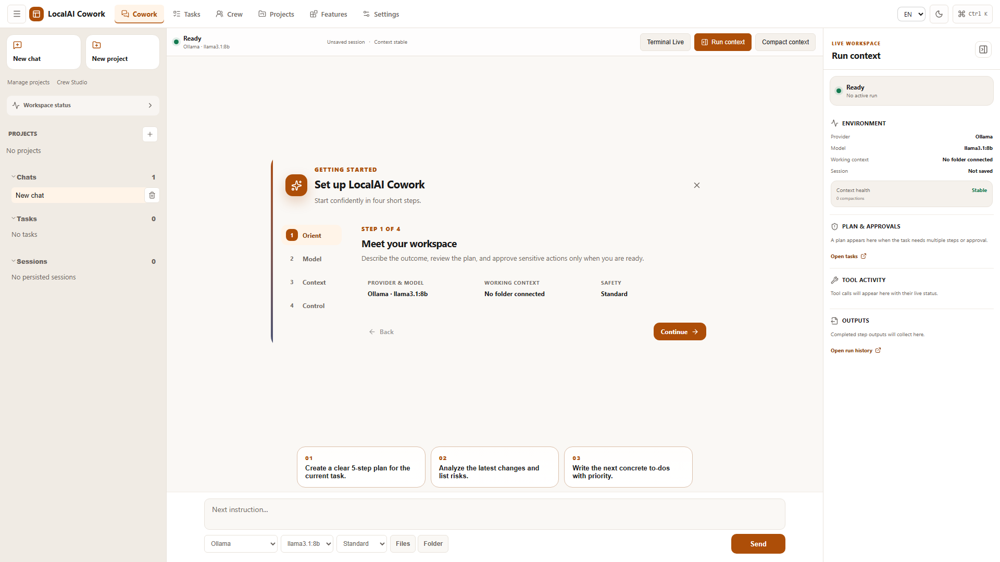

Outcome-driven tasks
Describe the result you want, keep the plan visible, and follow progress instead of reconstructing it from chat history.
Open-source AI coworker · Local-first · Windows
LocalAI Cowork is the open-source, local-first alternative for agentic work alongside Claude Cowork and Microsoft Copilot Cowork. Bring your own model, files, and tools into one inspectable Windows workspace.

One workspace, less tool switching
Chat is only the starting point. LocalAI Cowork keeps the task, context, tools, progress, and review surface together.
Describe the result you want, keep the plan visible, and follow progress instead of reconstructing it from chat history.
Choose the files and folders a task can use. Keep relevant local material close to the work.
Use Ollama locally or connect compatible providers such as OpenRouter and OpenAI-style endpoints.
Connect MCP servers, terminals, and reusable skills when the task needs more than a text response.
Permission policies and approval states keep sensitive operations visible before they run.
Turn repeated instructions into templates, skills, and pipelines instead of starting from zero.
Local-first by design
LocalAI Cowork is a desktop application, not a hosted account. You decide which model and tools receive a request.
Provider keys and connector secrets are stored through Windows Credential Manager instead of ordinary app settings.
Sensitive fields are stripped from persisted frontend state and redacted from bounded audit output.
This site ships no analytics, advertising scripts, third-party fonts, or tracking cookies.
The source, release workflow, dependency audits, checksums, SBOM, and build attestations are public.
A visible working loop
Select a workspace, relevant files, a model, and the tools the task may use.
State what “done” looks like. LocalAI Cowork keeps execution and progress in one place.
Inspect important actions, outputs, and audit information before shipping the result.
Choose the workspace that fits
LocalAI Cowork focuses on inspectable source, local model support, and user-controlled tools. These guides explain the trade-offs honestly—without pretending every product solves the same problem.
Built in public
LocalAI Cowork is early software and welcomes concrete bug reports, feature ideas, documentation fixes, and focused pull requests.
Useful details
LocalAI Cowork is an open-source Windows desktop workspace for AI-assisted work. It combines chat, tasks, file context, model configuration, MCP servers, tools, approvals, and audit information in one application.
Yes. Ollama is supported for local model execution. You can also configure OpenAI-compatible or OpenRouter endpoints when a hosted model fits the task better.
The app itself runs locally and the current release has no implemented telemetry sender. Requests leave the device only when you choose a remote model endpoint, connector, MCP server, or web-enabled tool. Those services receive the information needed for the action you requested.
Yes. The application is available under the Apache License 2.0. A remote model provider may charge for its own API usage; local Ollama use does not require a provider subscription.
The current installer and smoke tests target Windows 10 and Windows 11. The Tauri foundation can support more platforms later, but Windows is the maintained release target today.